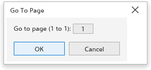
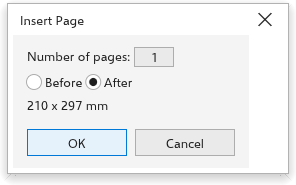
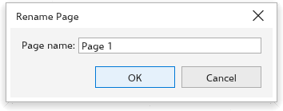
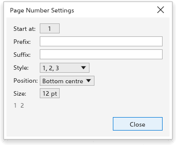

Tato stránka zatím není přeložena a zobrazuje se v angličtině.
Working with pages
Moving between pages
- Click a page tab under the drawing window, or use the page navigator beside them (first, previous, next and last page).
- Press PgUp or PgDn.
- Choose Layout > Go to Page, type the page number in the Go To Page dialog box and click OK.

The Pages panel
The Pages panel lists the pages of the drawing. Click a page to go to it. Its buttons Insert Page, Delete Page and Duplicate Page act on the current page, and Page Sorter View shows every page as a thumbnail. Open it from Window > Panels.

Inserting pages
- Choose Layout > Insert Page, or click one of the insert buttons of the page navigator (they add one page of the current size before or after the current page at once).
- In the Insert Page dialog box, set the Number of pages and choose Before or After the current page.
- Click OK.

Deleting pages
Delete Page asks which pages to delete: the page number in Delete page (the current page to start with), and to delete a range, Through to page with the last page of it. All of them go in one step, which Undo brings back. A drawing keeps at least one page. Delete Page on a page tab's menu deletes that page at once.
Duplicating a page
- Choose Layout > Duplicate Page, or right-click the page tab and choose Duplicate Page.
- Under Insert new page, choose Before selected page or After selected page.
- Choose Copy layer(s) only for a page with the same layers and nothing on them, or Copy layer(s) and their contents to copy the objects too.
- Click OK. The copy becomes the current page; Edit > Undo removes it.
The page tab menu also has Insert Page After, Insert Page Before, Delete Page and Switch Page Orientation.
Renaming a page
Choose Layout > Rename Page, or double-click the page tab. Type the Page name and click OK.

Page size and orientation
Layout > Page Size opens the Page Size dialog box:
- Type the Width and Height; Swap exchanges them.
- Tick Apply to all pages to change every page, or leave it off to change the current page only.
- Click OK.

Switch Page Orientation turns the page between portrait and landscape. With nothing selected, the property bar of the Pick tool also sets the page size and orientation. The full page settings are in Document options.
Page numbers
Layout > Insert Page Number puts a page number On Active Layer, On All Pages, On All Odd Pages or On All Even Pages. The numbers on master layers show the right number on every page. Object > Insert > Page Number places one in the text you are editing.
Layout > Page Number Settings sets how they look:
- Start at: the first number;
- Prefix and Suffix: text around the number, such as "Page ";
- Style: 1, 2, 3, I, II, III, i, ii, iii, A, B, C or a, b, c;
- Position: Bottom centre, Bottom outer corner, Top centre or Top outer corner.

Page background
Layout > Page Background sets the color behind every page; see Document options.